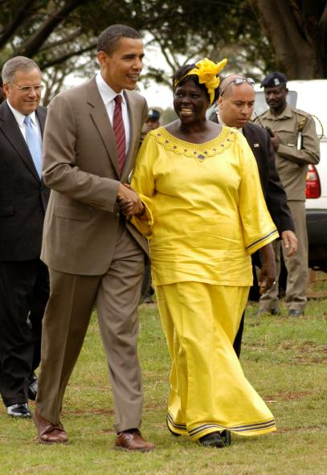

Wangari Maathai
The woman who started the Green Belt Movement

Here is a timeline of Wangari Maathai life
- 1940: Born in Nyeri, Kenya
- 1960: Study at Mount St. Scholastica College in Atchison, Kansas.
- 1977, Maathai spoke to the NCWK concerning her attendance at Habitat I. She proposed further tree planting, which the council supported. On 5 June 1977, marking World Environment Day, the NCWK marched in a procession from Kenyatta International Conference Centre in downtown Nairobi to Kamukunji Park on the outskirts of the city, where they planted seven trees in honour of historical community leaders. This was the first "Green Belt", which was first known as the "Save the Land Harambee" and then became the Green Belt Movement.
- 2004: Wangarĩ Maathai was awarded the 2004 Nobel Peace Prize for her "contribution to sustainable development, democracy and peace".
- 2011: Wangarĩ Maathai died on 25 September 2011 of complications arising from ovarian cancer while receiving treatment at a Nairobi hospital.
If you have time, you should read more about this incredible human being on
Wikipedia